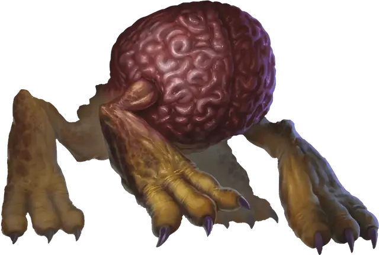

Пожиратель интеллекта
Intellect Devourer
Крошечная Аберрация, законно-злая

Класс Доспеха 12
Хиты 21 (6к4 + 6)
Скорость 40 футов
| мод | спас | ||
|---|---|---|---|
| СИЛ | 6 | −2 | −2 |
| ЛОВ | 14 | +2 | +2 |
| ТЕЛ | 13 | +1 | +1 |
| мод | спас | ||
|---|---|---|---|
| ИНТ | 12 | +1 | +1 |
| МДР | 11 | +0 | +0 |
| ХАР | 10 | +0 | +0 |
Навыки Восприятие +2, Скрытность +4
Сопротивление урону дробящий, колющий, рубящий от немагических атак
Иммунитет к состояниям ослепление
Чувства слепое зрение 60 футов (слеп за пределами этого радиуса), пассивное Восприятие 12
Языки понимает Глубинную Речь, но не говорит, Телепатия 60 фт.
Опасность 2 (450 опыта)
Бонус мастерства +2
Среда обитания Подземье
Особенности
Обнаружение сознания. Пожиратель интеллекта может чувствовать присутствие и местонахождение всех существ в пределах 300 футов, обладающих Интеллектом 3 и выше, какими бы барьерами они не были отгорожены, если только они не защищены заклинанием сокрытие разума [mind blank].
Действия
Мультиатака. Пожиратель интеллекта совершает одну атаку когтями и использует Пожирание интеллекта.
Когти. Рукопашная атака оружием: +4 к попаданию, досягаемость 5 футов, одна цель. Попадание: Рубящий урон 7 (2к4 + 2).
Пожирание интеллекта. Пожиратель интеллекта нацеливается на одно существо, видимое в пределах 10 футов и обладающее мозгом. Цель должна преуспеть в спасброске Интеллекта Сл 12 от этой магии, иначе получит урон психической энергией 11 (2к10). Кроме того, при провале бросьте 3к6: если сумма превысит значение Интеллекта цели, эта характеристика уменьшается до 0. Цель после этого становится ошеломленной, пока не восстановит хотя бы 1 единицу Интеллекта.
Кража тела. Пожиратель интеллекта начинает состязание Интеллекта с недееспособным гуманоидом, находящимся в пределах 5 футов от него, не защищенным защитой от зла и добра [protection from evil and good]. Если он выиграет состязание, то магическим образом пожирает мозг цели, телепортируется в череп цели и захватывает контроль над телом. Находясь внутри существа, пожиратель интеллекта обладает полным укрытием от атак и прочих эффектов, исходящих снаружи. Пожиратель интеллекта сохраняет свои значения Интеллекта, Мудрости и Харизмы, а также знание Глубинной Речи, телепатию и свои особенности. Вся остальная статистика берется у цели. Он знает все, что знало существо, включая заклинания и языки.
Если тело носителя умирает, пожиратель интеллекта должен покинуть его. Заклинание защита от зла и добра [protection from evil and good], наложенное на тело, тоже изгоняет пожирателя интеллекта. Пожиратель интеллекта также должен покинуть тело цели, если та восстановит съеденный мозг заклинанием исполнение желаний [wish]. Потратив 5 футов перемещения, пожиратель интеллекта может добровольно покинуть тело, телепортируясь в ближайшее свободное пространство в пределах 5 футов. После этого тело умирает, если его мозг не восстановится в течение 1 раунда.
Описание
«НЕ ПЛАЧЬ. МЫ НЕ СОБИРАЕМСЯ ЕСТЬ ТВОЙ МОЗГ. НА САМОМ ДЕЛЕ, ТВОЙ МОЗГ СКОРО ОТПРАВИТСЯ В ВОСХИТИТЕЛЬНОЕ ПУТЕШЕСТВИЕ!»
— КУОРИК ЭЛЬ-СЛУРРК, СВЕЖЕВАТЕЛЬ РАЗУМА
Пожиратель интеллекта похож на ходячий мозг, покрытый коркой, на когтистых звериных лапах. Эта мерзкая аберрация питается интеллектом разумных существ, получая контроль над телом жертвы в угоду своим хозяевам, свежевателям разума.
Создания иллитидов. Свежеватели разума разводят пожирателей интеллекта, чтобы те служили охотниками в Подземье. Пожирателей интеллекта создают из мозга раба, подвергая его ужасному ритуалу. Мозг отращивает лапы, становясь разумным хищником, таким же извращенным и злым, как и его хозяева.
Смертоносные кукловоды. Пожиратель интеллекта поглощает разум существа и его воспоминания. Затем он обращает тело носителя в марионетку под своим контролем. Пожиратель интеллекта обычно использует свою марионетку-носителя, чтобы заманивать других во владения свежевателей разума, чтобы их поработили или съели.